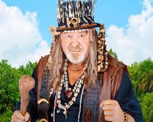

Age restriction: 16PG
The storyline of Mr. Bones 3, Son of Bones begins at the turn of the last century, when we witness (flashback) the burying of the Kruger millions by two Boer soldiers, who then kill each other through idiotic greed, leaving the Kruger millions hidden in a graveyard in Kuvukiland. Now, in the present, a scrawny businessman named Alvin (Moonsammy) and his Texan engineer partner named Jack (Janks), together with their beautiful guide, Gabrielle (Anstey) are plotting to mine for oil.